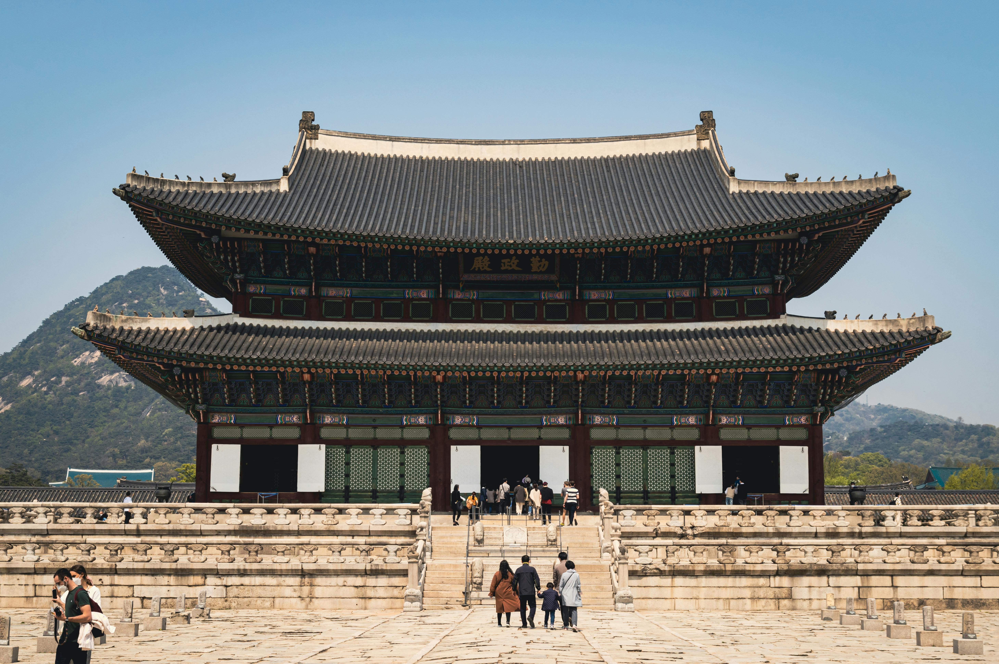

Palacio Gyeongbokgung
Seúl — Fundado en 1395
Construido al inicio de la dinastía Joseon, fue la residencia principal de la familia real y el centro político del país. Su nombre significa "palacio radiante de gran felicidad".
Destacan sus amplios patios de granito, el majestuoso Salón del Trono (Geunjeongjeon) y el pabellón Gyeonghoeru sobre un estanque artificial. La disposición sigue los principios geománticos de Pungsu, con las montañas al norte como protección.